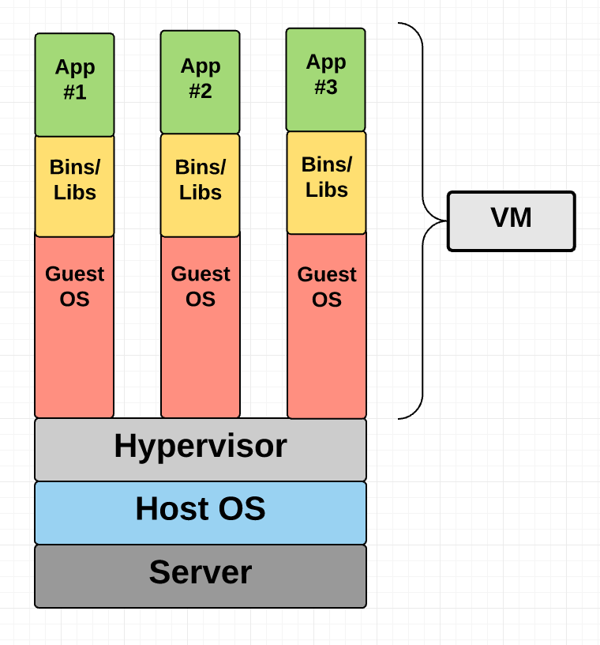
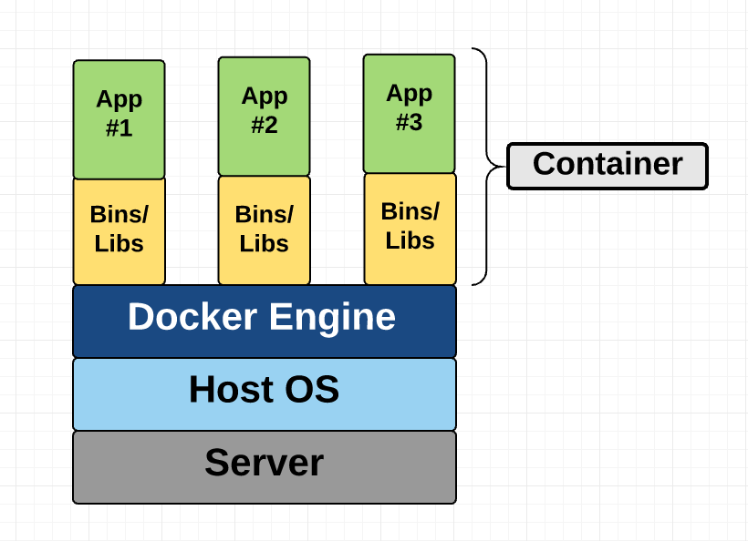
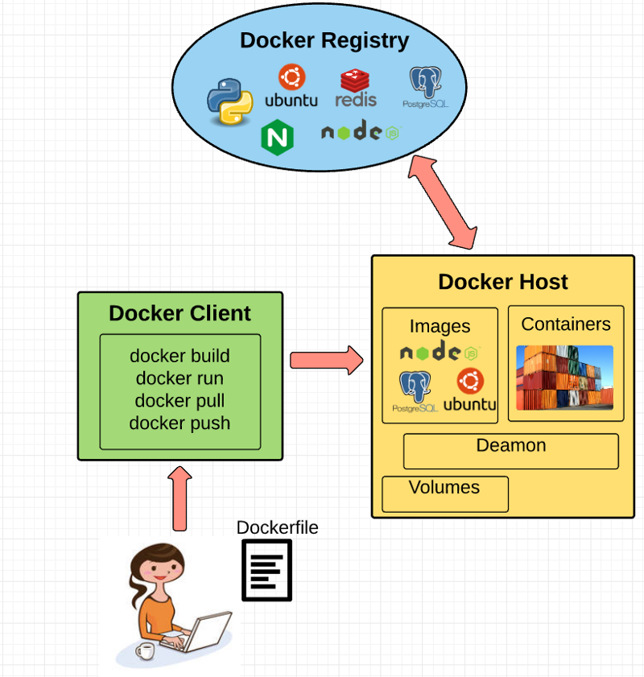

Git Basics
Created by Rajendrasinh Parmar / @RAJENDRASINH_09
What is Version control?
Version control system
containers & VMs
Goals
- To isolate an application and its dependencies
- Remove the need for physical hardware
- More efficient use of computing resources
Virtual Machines (VM)
A VM is essentially an emulation of a real computer that executes programs like a real computer.
VMs run on top of a physical machine using a “hypervisor”. A hypervisor, in turn, runs on either a host machine or on “bare-metal”.
Virtual Machines (VM) ...
Container
Container provides operating-system-level virtualization by abstracting the “user space”
The one big difference between containers and VMs is that containers share the host system’s kernel with other containers.
Container ...
Key Benefits of Docker
- Continuous Deployment and Testing
- Portability
- Environment Standardization and Version Control
- Isolation
- Security
Docker Ecosystem
Fundamental Docker Concepts
- Docker Engine
- Docker Client
- Docker Daemon
- Dockerfile
- Docker Image
- Union File Systems
- Volumes
- Docker Containers
- Docker Registry
Docker Engine
Docker engine is the layer on which Docker runs
- Docker Daemon
- Docker Client
- REST API
Dockerfile
A Dockerfile is file where you write the instructions to build a Docker image
# Nginx
#
# VERSION 0.0.1
FROM ubuntu
LABEL Description="Description of docker image"
RUN apt-get update
RUN apt-get install -y nginx
Docker Image
Images are read-only templates that you build from a set of instructions written in your Dockerfile
Union File Systems
Docker uses Union File Systems to build up an image
Benefits of Union File system
- Duplication-free
- Layer segregation
Volumes
- Volumes are the “data” part of a container, initialized when a container is created.
- Data volumes are separate from the default Union File System and exist as normal directories and files on the host filesystem
Docker Containers
- Wraps an application’s software into an invisible box with everything the application needs to run
- That includes the operating system, application code, runtime, system tools, system libraries, and etc.
Docker Containers ...

Questions?
Documentation - https://docs.docker.com